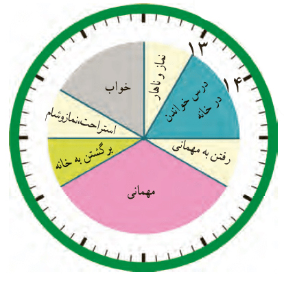
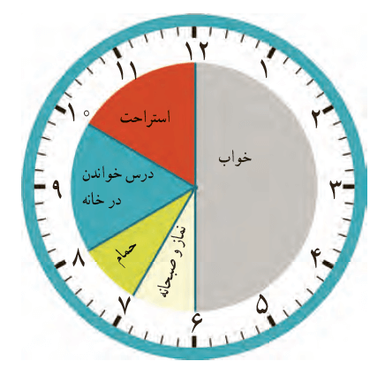

کار در
کلاس
زهرا کارهای خود را در روز جمعه (یک شبانه روز) به صورت زیر نشان داده است.
عددهای مناسب برای ساعت های بعدازظهر را بنویسید و شکل را کامل کنید.

بعد از ظهر
بعد از ظهر

قبل از ظهر
قبل از ظهر
حالا به سؤال های زیر پاسخ دهید.
زهرا در مجموع چند ساعت در خانه درس خوانده است؟
زهرا چه ساعتی به مهمانی رسیده است؟
بعد از ظهر یا
زهرا چه ساعتی از مهمانی برگشته و به خانه رسیده است؟
بعد از ظهر یا
عددهای مناسب برای ساعت های بعدازظهر را بنویسید و شکل را کامل کنید.
17